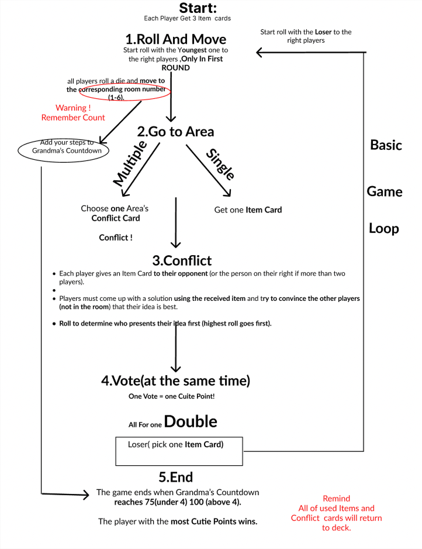
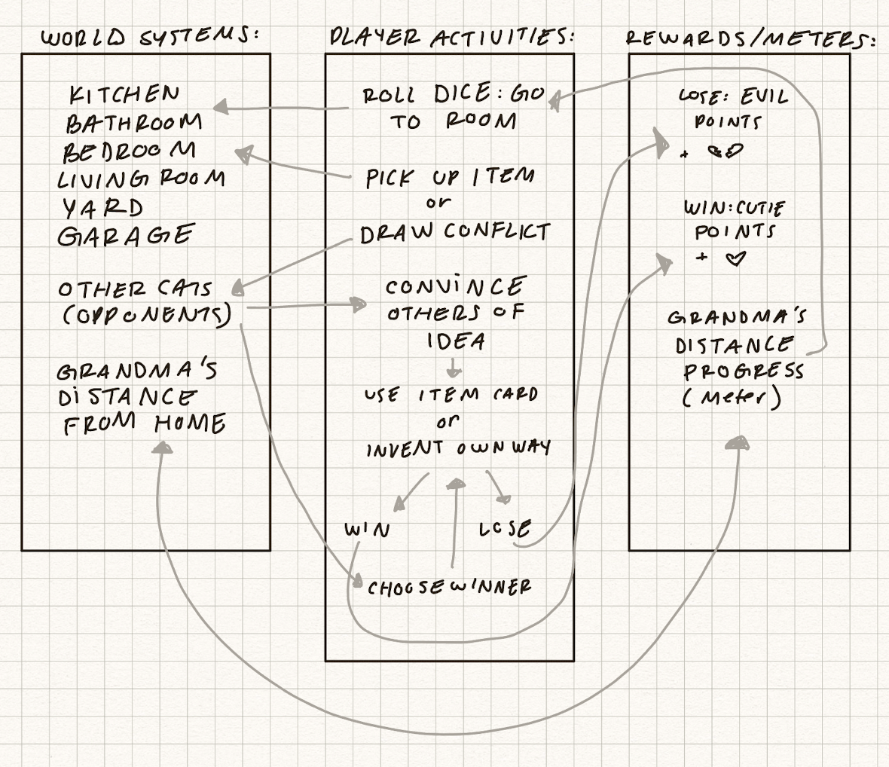
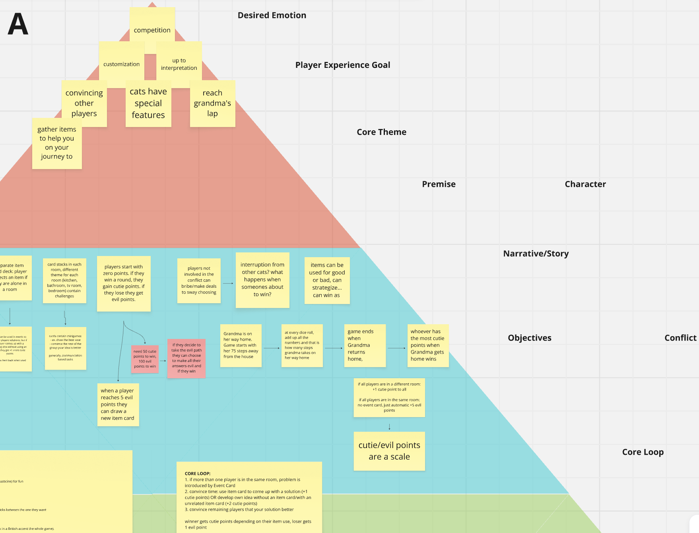
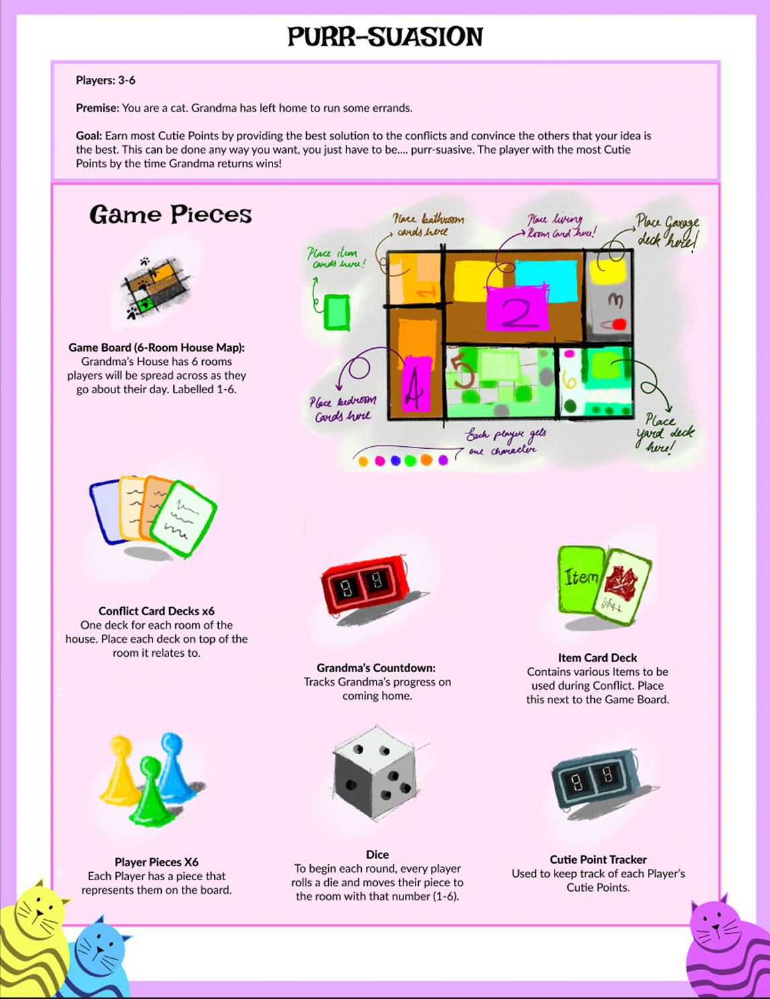
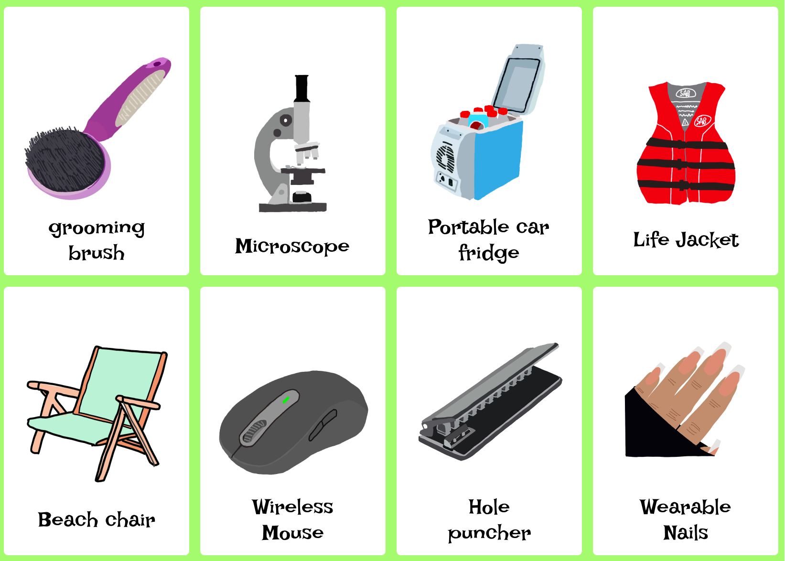

Goal 项目目标
Apply experiential and social system design to build a highly interactive party game where creativity and deception drive the core loop. 运用体验系统与社交系统设计，打造一款高互动的派对桌游，让“创意表达”和“策略性欺骗”成为核心玩法驱动。
Showcase 展示视频
Purr-suationwas selected for the SFU SIAT Project Gallery and featured on the SFU Showcase webpage. 喵言巧语入选 SFU SIAT Project Gallery，并展示于 SFU Showcase 官方页面。
01 Description 01 项目简介
Purr-suation is a fast, competitive party board game where players embody different cats and chase Cutie Points through creative problem-solving and social persuasion. When conflicts trigger, players must incorporate mismatched Item Cards into their solutions and convince others to vote for them—before “Grandma” comes home. 《喵言巧语》是一款节奏快速、带竞争性的派对桌游。玩家扮演不同的猫咪，通过“创意式解决问题”和“社交说服”来获取 Cutie Points。当冲突触发时，玩家需要把不合适的道具卡融入自己的解决方案，并说服其他人投票支持，在“奶奶”回家之前尽可能累积点数。 The player with the most Cutie Points before Grandma arrives is crowned the cutest cat. 在奶奶回家前 Cutie Points 最高的玩家，将成为“最可爱的小猫”。
02 Interaction Flow 02 交互流程
From an interaction design perspective, I treated table interaction—talking, persuading, voting, and reacting—as the game's primary “interface,” and designed the flow to be smooth, readable, and inviting. 从交互设计角度出发，我将桌面上的对话、说服、投票与即时反应视为游戏的主要“界面”，并将流程设计为清晰、顺畅且易于参与。
My Work 我的工作
CORE LOOP — 核心循环 —
Designed a clear, repeatable conflict loop that links Item Cards, persuasion, and voting into one consistent interaction pattern. 设计可重复、可读性强的冲突循环，将道具卡、说服与投票串联为统一的交互模式。
Pacing — 体验节奏 —
Structured the turn flow so every player stays engaged, with minimal downtime and clear speaking/voting cues. 梳理回合节奏，减少等待与空档，并明确发言/投票提示，让所有玩家始终保持参与感。
Details 具体内容
— CORE LOOP — 核心循环
As the interaction designer, I defined the conflict sequence at the table: when cats meet, they exchange Item Cards; each involved player gets a short window to build a solution pitch under that constraint; then non-involved players vote in order. I focused on making this sequence easy to follow so everyone always knows when to speak, when to listen, and when to vote. 作为交互设计师，我明确了桌面冲突的交互顺序：猫咪相遇后先交换道具卡；参与冲突的玩家在限制条件下快速构建“解决方案陈述”；随后由非当事玩家按顺序投票。我重点保证流程可追踪、可执行，让每个人都清楚何时发言、何时倾听、何时投票。
— Pacing — 体验节奏
I structured solo turns and supporting actions so isolated players stay active instead of waiting. Based on playtests, I rewrote the rules into a single loop: roll → move → conflict/solo → persuade → vote → update—and aligned the board layout so players can read that flow at a glance. 我设计了个人回合与支援行动，让暂时“落单”的玩家也能持续行动而不是等待。基于测试反馈，我将规则收束为一条清晰循环：roll → move → conflict/solo → persuade → vote → update，并同步调整棋盘信息层级，使玩家能够一眼读懂当前流程。


03 Game Systems 03 游戏系统
As the game designer, I defined Purr-suation's underlying system—board layout, card families, constraints, and win conditions—so the “cats causing trouble while Grandma is out” fantasy becomes a tight, replayable party game. 作为游戏设计师，我定义了《喵言巧语》的底层系统——棋盘结构、卡牌家族、限制条件与胜利条件，让“猫咪闯祸”的幻想能够落地为紧凑、可重复游玩的派对桌游体验。

My Work 我的工作
SYSTEM STRUCTURE — 系统结构 —
Designed the room-based board layout, the shared Item deck, and the Cutie Points scoring model. 设计基于房间的棋盘结构、共享道具卡牌库与 Cutie Points 计分模型。
INTERACTION — 交互机制 —
Designed the card families and constraints to push “constrained creativity” through persuasion and mismatched items. 通过卡牌家族与限制条件，推动“受限创意”，用不匹配道具+说服来赢得投票。
RULESET — 规则迭代 —
Iterated the ruleset by expanding room conflicts and cutting features that weakened pacing or clarity. 通过扩展房间冲突、删减冗余机制来迭代规则，优先保证节奏与清晰度。
Details 具体内容
— SYSTEM STRUCTURE — 系统结构
I built Purr-suation around a room-based board where movement creates collisions. Those collisions trigger conflicts, which in turn generate Cutie Points—the only scoring resource. On top of the spatial structure, I added a shared Item deck and a “Grandma” countdown that defines session length and ensures the game ends cleanly with a clear winner. 我将《喵言巧语》的核心建立在“房间式棋盘 + 移动碰撞”之上：移动会制造相遇，相遇会触发冲突，而冲突则产出 Cutie Points（唯一计分资源）。在空间结构之上，我加入共享道具卡牌库与 “奶奶倒计时”，用于明确局长、保证结算清晰，并自然导向胜者产生。
— INTERACTION — 交互机制
When designing the card families, I aimed for constrained creativity rather than pure optimization. Many Item Cards are intentionally “wrong” for a room problem, and players are required to incorporate those items into their pitch. This reliably produces surprising combinations and light sabotage. 在设计卡牌体系时，我追求的是“受限创意”。很多道具卡会刻意与房间问题不匹配，但规则要求玩家必须把这些道具写进自己的解决方案陈述中。这样系统就能稳定地产生意外组合与轻度“带节奏/拆台”的效果。
— RULESET — 规则迭代
During iteration, I refined what stayed in the final ruleset and what was cut. Item Cards were expanded and reorganized so rooms feel distinct without becoming repetitive, while overcomplicated character feature cards were removed when they didn't strengthen the core identity or slowed the pace. 在迭代过程中，我不断筛选“该留下什么、该删掉什么”。我扩展并重组了道具卡牌，让不同房间的冲突更有差异、又不至于重复；同时删掉了过于复杂的角色特性卡，因为它们并没有强化核心体验，反而拖慢节奏、降低可读性。

Going further 更多内容
What I did beyond my position 其他贡献
04 Visual Design 04 视觉设计
On the visual side of Purr-suation, I designed the cat mascot logo and illustrated the Item Cards in a clean vector style. I used warm, playful colors and simple shapes to match the light-hearted tone while keeping the icons readable during fast, social play. 在《喵言巧语》的视觉部分，我设计了猫咪吉祥物 Logo，并以简洁的矢量风格绘制了道具卡牌。我使用温暖、轻松的配色与清晰的形状语言来贴合派对氛围，同时保证图形在快速、社交强的对局中依然易读。 Together, the logo and Item Cards establish a cohesive “cute but slightly chaotic” identity and make absurd tools feel funny and memorable rather than confusing. 这些元素共同建立了“可爱但有点混乱”的统一识别度，让荒诞道具更好笑、更好记，而不是让玩家困惑。


Reflection 项目反思
Prioritizing Clarity and Emotion 优先清晰度与情绪体验
Purr-suation made me realize that, at the beginning, I was too attached to the idea that “more complexity looks smarter.” In playtests, I repeatedly saw mechanics I personally liked being ignored, perceived as annoying, or directly disrupting pacing. That forced me to accept that what I find interesting doesn't automatically deserve to stay—the parts that matter are the ones that deliver clear feedback and emotional peaks. 《喵言巧语》让我意识到：一开始我过于执着于“让机制更复杂”这个想法。但在测试中，我看到一些我个人很喜欢的机制被忽略、被认为麻烦，甚至直接破坏节奏。这迫使我承认，真正重要的是能带来清晰反馈与情绪峰值的部分。 This project also made me more sensitive to who is actually sitting at the table. Not everyone enjoys performing or debating in front of others—some players get energized, while others quietly shut down. Watching different personality types engage with the game pushed me to think harder about how rule text sets expectations, how pacing supports participation, and how the visual tone helps players feel safe to speak up. 这个项目也让我更关注“桌上坐着的人到底是谁”。并不是所有玩家都喜欢当众表演或辩论；有人会更兴奋，有人则会逐渐沉默。观察不同性格玩家的参与方式，让我开始更认真地思考，规则文本如何设定预期、节奏如何支撑参与、以及视觉氛围如何降低发言压力。
Next Steps for 《喵言巧语》 Purr-suation 迭代展望
If I continue iterating on Purr-suation, I want to design lower-pressure ways for quieter players to participate—for example, clearer supporting roles, softer prompts, and alternative contribution paths that don't require “outperforming” others. This mindset—“start with the people, then design the system”—has already influenced how I approach later projects. 如果继续迭代《喵言巧语》，我会更有意识地为安静型玩家设计低压力的参与方式，例如更清晰的支援型角色、更柔和的提示语，以及不需要“表现压过别人”也能贡献的路径。“先看人，再做系统”的思维方式，也已经开始影响我之后的项目做法。